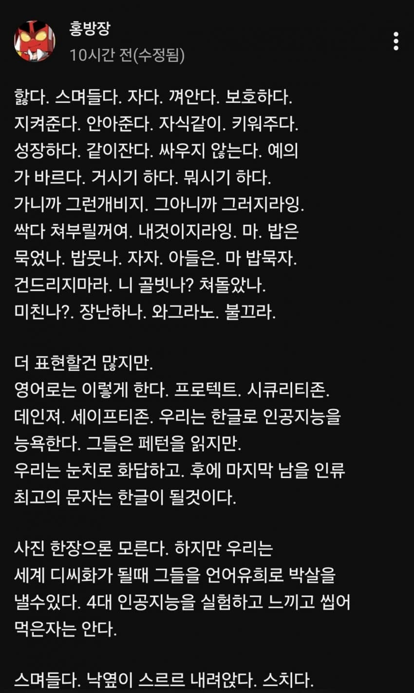
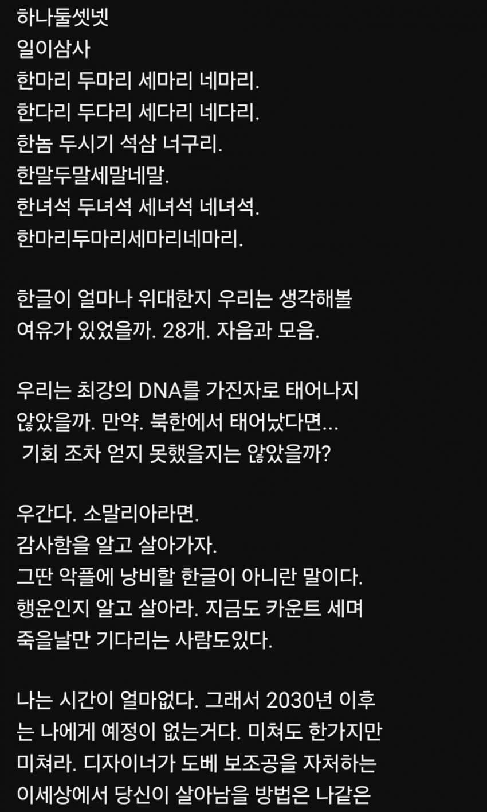

조현병 더심해진듯
큐비트


조현병 더심해진듯
큐비트
어릴 때 방송 재밌게 봤었고
나이드셔서는 결혼 잘 하셔서 장사도 하시고 그렇게 나름 잘 지내시는 것 같더니만
저 정도로 무너져서 뭐 할 수 있는 게 없어 보이네
길게 적은 시라고 생각이 들 정도
뒷고기라는 걸 홍방장 방송에서 처음 알았었는데
홍박사님을 아세요 그게 아니였네 ㄷㄷ
뭔가 좀 무섭게 써서 그렇지 전보다는 뜻 전달이 되는 느낌이네
큐비트
아직 단어랑 문장이 완성되는걸 보니까 치료의 여지는 남아있음. 적극적으로 약물치료 하면 증상조절될것같아
최고의 한글인건 맞는데, 니가, 한국인만이, 인간이 더 잘쓸것같진 않은데?
더 똑똑한새끼들이 갖다 쓰고 더 발전시킬듯
이새끼도 좀 위험해보이는데;
저렇게 문장이 와해되는 수준의 증상으로 gpt를 쓰면 gpt는 어떻게 대응할까
내 친구도 조현병있고 건너건너 조현병 걸린사람들 보면 정확한 원인은 모르겠다만 공통적으로 좀 스트레스를 많이 받는 사람들이였음 내 친구도 입시 스트레스때 엄청 심해졌다고 했으니
스트레스 때문에 뇌가 정상적인 작동을 못하는건가 쉬면 좀 괜찮아짐?
큐비트가 뭐야
홍방장이 예전에 자기가 여러 자아를 가지고 있으며,
다른 자아가 나오면 큐비트라고 해달라고 했었나 대충 그런 내용의 글을 쓴 적이 있음.
다시 내렸네
정상화될때 글들 지운다던가
병원가
나무위키가면 볼수있는데
인생사 모른다 진짜
잘나가던 방송인에 개인 가게도 운영하고
20살 연하의 아내도 있던 사람이 이렇게 무너질 일인가
가끔 보이는데 괜히 댓글 달았다가 나중에 엄한걸로 경찰 조사 받을까봐 아예 안봄 이제 ㄷㄷ
홍형... 안타깝다
큐비트